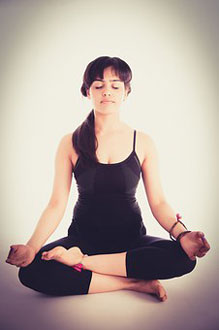

Mindfulness: The practice of vipassana
Vipassana is a quality of mind generally referred to as mindfulness. Mindfulness is a state of open and nonjudgmental attention to the contents of consciousness. Cultivating this quality of mind has been shown to moderate pain, relieve anxiety and depression, improve cognitive function.
It may sound easy to sit quietly and remove your mind of distraction, but when you begin practicing vipassana, you'll find that distraction is the normal condition of the mind. In todays fast-paced world, it's harder than ever to train the mind to break through these continuous distractions. Meditation is a technique for doing just this. The goal is to enjoy a mind that is undisturbed by worry and to become effortlessly aware of the flow of experience in the present.
There is no time limit on meditation. You can start with a 5-minute meditation session once a month, spend an hour a day meditating, or anything in between. This is your practice, your journey, and you proceed at your pace. Regardless of how long or how often you practice vipassana, you will always receive its benefits.
How to begin practicing vipassana
- Sit comfortably, with your spine erect, either in a chair or cross-legged on a cushion.
- Close your eyes, take a few deep breaths, and feel the points of contact between your body and the chair or floor. Notice the sensations associated with sitting, such as feelings of pressure, warmth, tingling, or vibration.
- Gradually become aware of the process of breathing. Pay attention to wherever you feel the breath most clearly either at the nostrils or in the rising and falling your abdomen.
- Allow your attention to rest in the mere sensation of breathing. Don t try to control your breath. Just let it come and go naturally.
- Every time your mind wanders in thought, gently return it to the sensation of breathing.
- As you focus on your breathing, you will notice that other perceptions and sensations continue to appear: sounds, feelings in the body, emotions. Notice these phenomena as they come into your field of awareness, and then return to the sensation of breathing.
- The moment you realize that you have been lost in thought, notice the present thought itself as an object of consciousness. Then return your attention to your breathing or to whatever sounds or sensations arise in the next moment.
- Continue in this way until you can simply witness all objects of consciousness sights, sounds, sensations, emotions, and even thoughts themselves as they arise and pass away.